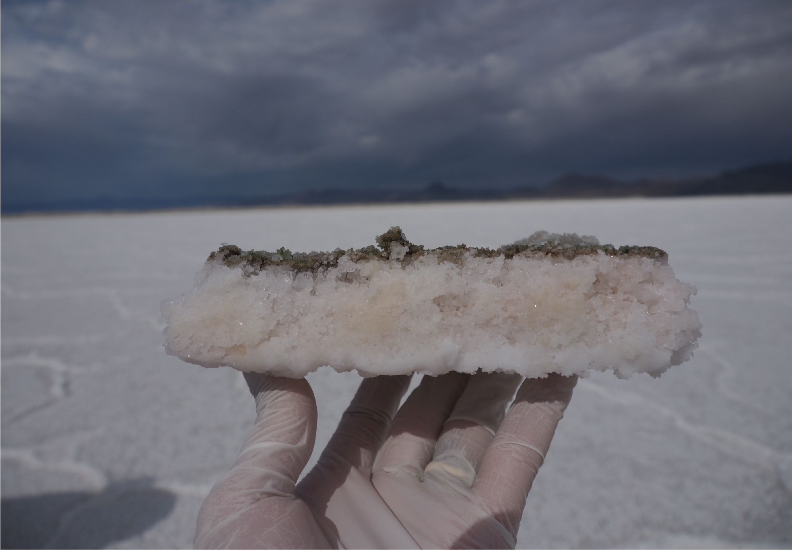

About Me

I have been analyzing data my whole life, from a curious 5 year old to a more scientifically trained adult. My scientific journey began by collecting data on endangered plant species at Oregon State University and moved to analyzing metabolic networks of microbial life in hydrothermal vents as a PhD student at the University of Utah. Throughout this journey, I realized digging around in the nitty gritty details of the data to find compelling stories to share is extremely satisfying. Collaborators consistently describe me as an independent worker who enjoys being part of a team. A team is greater than the sum of it's parts, and I am a strong believer interdisiplinarity will always push the data further. My blend of industry and academic experience has honed a unique and diverse set of skills. These skills include genomic sequence analysis/bioinformatics, data analysis, data science, and microbiology lab techniques. I am currently seeking employment in data science and analytics. Check out my awesome work or resume!
Portfolio
Are Suicide and Happiness Correlated?
Suicide data is combined with happiness index scores for individual countries. The suicide rate for each country is calculated, explored, and analyzed in Python. Countries with high and low rates are identified, although low rates may be due to other factors such as incomplete reporting in some countries. Countries with high and low happiness indices are also explored. Finially, the relationship between happiness index and suicide rate is modeled. Contrary to my hypothesis, a lower happiness index is not correlated with higher suicide rates. Countries with a happiness index ~6 seem to have the highest rates of suicides. Additionly, this analysis shows the rate of suicide increases with age groups.
Check out my Python analysis and code here.
Who Lives At the Bonneville Salt Flats?

Although they seem barren and desolate from the surface, a robust ecosystem can be found living within and just under the salt at this majestic site in Utah. This R project used genomic datasets that were constructed from 8 sites across the Bonneville Salt Flats. This work identifies species performing crucial roles in ecosystem functioning and investigates potential differences in metabolic processes across and within the 8 sites. The R code can be found here .
McGonigle et al, 2021. Metabolic Potential of Microbial Communities in the Hypersaline Sediments of the Bonneville Salt Flats, in review. McGonigle et al., 2019. Robust Archaeal and Bacterial Communities Inhabit Shallow Subsurface Sediments of the Bonneville Salt Flats, mSphere 4:4 e00378-19
Moneyball Project: How to Build a Cheap Baseball Team
This project is from the R Data Science course I completed on DataCamp. This project solves a problem faced in 2002 by the Oakland A's. Following the 2001 season, the team lost three key players. The front office took advantage of new baseball statistics to replace the lost players with cheaper ones to win 20 consecutive games. The story became the premise of Michael Lewis' 2003 book Moneyball: The Art of Winning an Unfair Game. This project is based off the book, which was later turned into the movie staring Brad Pitt. Check out the R code here!